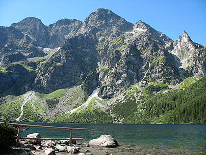
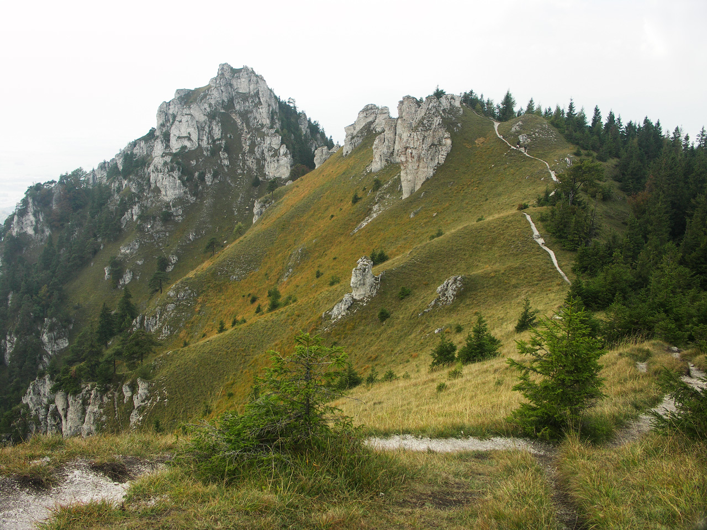

<!DOCTYPE html>
<html lang="en">
</html>
<head>
<meta charset="UTF-8">
<meta name="viewport" content="width=device-width, initial-scale=1">
<link href="https://fonts.googleapis.com/css2?family=Open+Sans&display=swap" rel="stylesheet">
	<title>Page</title>
	<style>
		body {
			font-family: 'Open Sans', sans-serif;
		}
		nav{
			background-image: url('img/h.jpg');
			height: 720px;
		}
		.gg {
			text-transform: uppercase;
			font-size: 30px;
			margin: 0px;
			position: relative;
			top: 25px;
			left: 25px;
			color: white;
		}
		a {
			text-decoration: none;
			color: white;
		}
		nav ul a:hover {
			border: solid;
			border-right: 3px white;
			border-left: 3px white;
		}
		.car {
			text-transform: uppercase;
			font-size: calc(1em + 3vw);
			color: #FFF5EE; 
			border: solid;
			border-width: 2px;
		}
		.gpg {
			border: solid;
			border-radius: 100px;
			padding: 10px;
			border-width: 0px;
			background-color: #87CEFA;
			font-size: 20px;
		}
		.ff {
			font-size: calc(1em + 0.5vw);
			margin-top: 30px;
			color: #6495ED;
		}
		.dd {
			font-size: calc(1em + 0.2vw);
			margin-right: 300px;
			margin-left: 300px;
		}
		.hp {
			height: 60%;
			width: 70%;
		}
		.ll{
			height: 60%;
			width: 70%;
		}
		.li {
			text-align: center;
			width: 50%;
		}
		.one {
			text-align: center;
			width: 50%;
			margin-top: 0px;
		}
		.fff {
			font-size: 25px;
			color: #6495ED;
			letter-spacing: 2px;
		}
		.ppp {
			font-size: 25px;
			color: #6495ED;
			letter-spacing: 2px;
		}
		.sos {
			height: 50px;
			background-color: grey;
			margin-top: 100px;
			margin-bottom: 0px;
			display: flex;
			justify-content: space-around;​
			align-items: center;
			color: white;
			font-size: 20px;
		}
		.rosos {
			height: 300px;
			background-color: black;
			display: flex;
			justify-content: space-around;​
			align-items: center;
			color: white;
			font-size: 20px;
		}
		.rore {
			margin-top: 100px;
		}
		nav div {
			display: flex;
			justify-content: center;
		}
		section {
			margin-top: 200px;
		}
		.noone {
			display: flex;
			justify-content: space-between; 
		}
		ul {
			display: inline-flex;
			justify-content: space-between;
			color: white;
			margin-top: 35px;
			margin-right: 20px;
			font-size: 20px;
			list-style-type: none;
		}
		.gaga {
			display: flex;
			align-items: center;
			margin-top: 100px;
		}
		.fa {
			margin: 0px 100px 0px;
		}
		.fu {
			margin: 0px 70px 0px;
		}
		@media (max-width: 1000px){
			ul {
				display: none;
			}
			.gaga {
				display: block;
			}
			.fu {
				margin: auto;
			}
			.fa {
				margin: auto;
			}
			.dd {
				margin: auto;
			}
			.one {
				width: auto;
			}
			.li {
				width: auto;
				margin-top: 20px;
			}
		}
		li {
			margin-left: 40px;
		}
		.joji {
			text-align: center;
		}
	</style>
</head>
<body>
<nav>
	<div class="noone">
	<p class="gg">Marynchuk project</p>
		<ul>
			<li><a href="#">HOME</a></li>
			<li><a href="#">DESTINATIONS</a></li>
			<li><a href="#">EVENTS</a></li>
			<li><a href="#">TAKE ACTION</a></li>
		</ul>
		</div>
	<section>
		<div class="rt">
	<p class="car"><strong>Carpathians are better</strong></p>
		</div>
		<div>
	<a href="#" class="gpg">Watch now</a>
</div>
</section>
</nav>
<header>
	<div class="joji">
	<p class="ff"><strong>Smth about Carpathians</strong></p>
	<p class="dd">The Carpathians are one of the main watersheds in Europe between the Baltic and Black Seas. They are divided into two sub-provinces - the Outer Carpathians (Western and Eastern) and Inner Carpathians (Western and Eastern). Orographically, the Western Carpathians (the territory of Austria, the Czech Republic, Slovakia, Poland and Ukraine - the highest mountains).</p>
	</div>
	<div class="gaga">
	<div class="one">
		
		<p class="fff"><strong>ABOUT</strong></p>
		<p style="letter-spacing: 1px" class="fa">The predominant heights of the Carpathians are 800–1200 m, the highest altitude is 2,655 m (Gerlachovsky Shield Mountain in the Tatras), and in Ukraine, Mount Hoverla (2,061 m). The greatest width is 430 km.</p>
	</div>
	<div class="li">
		
		<p class="ppp"><strong>ACTION</strong></p>
		<p style="letter-spacing: 1px" class="fu">The area of ​​this mountain system is 24 thousand km2. 20% of all forests in Ukraine grow in the Ukrainian Carpathians. The Carpathian Mountains are relatively young, formed in the Alpine epoch of mountain building, their age is over 25 million years.</p>
	</div>
	</div>
</header>
<div class="sos">
	<p>Want to know more?</p>
</div>
<div class="rosos">
	<p class="rore">2020 All rights reserved</p>
</div>
</body>